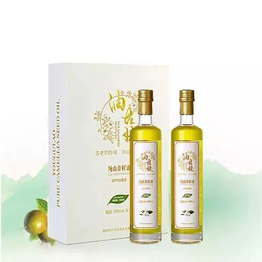

2017/11愿落的枫叶，覆盖你所有纷繁困扰;凉爽的秋风，能吹尽你所有哀愁与悲伤，让我浓浓的爱在漫漫的秋季，带给亲爱的你最贴心的暖意！
大家知道山茶油的好处是什么吗？ 今天，小昌君给各位亲爱的伙伴们普及一下山茶油的好处，特别是女性朋友们哦！
在西方，上好的特纯山茶籽油一直是有钱名媛的美容专用品，3千多年来无数女人用曼妙雪白的肌肤证明，山茶籽油是全能的“化妆品”，无论是吃或抹均具有美容神奇作用。
1
唯一可以减肥的神油
山茶籽油的不饱和脂肪酸和天然优质维生素E联合作用，可以分解体内脂肪；维生素K外抹可以吸收皮下多余脂肪，因此它是唯一内服外用均具有减肥作用的天然植物神油。
2
既可防晒又可以防冻
山茶籽油夏可防晒冬可防冻，夏涂于皮肤可以防止皮肤红肿刺痛，尤其可以预防皮肤癌；冬季对于皮肤发皴、手脚干裂、掉皮屑有极好防止效果。婴儿尿腌、汗渍处亦可涂抹。
3
全身皮肤迅速变细嫩
山茶籽油富含天然优质维生素E、A、B、D、K、F等，对皮肤的滋养非常温和，没有人工化学化妆品的副作用，可迅速使皮肤柔嫩而有亚光光泽。一般第一次油浴就有明显感觉。
看到这里，各位女性同胞们是不是心动了。。。
别急呢，小昌君想问下，大家在洗头的时候是不是有些许困惑呢？不少人受到掉发、分叉、头发干燥、白头发或头皮屑困扰，之前小昌君用过一些洗发水（这里就不点名咯，嘻嘻），因为小昌君本身头发比较干燥，用过的洗发水后效果还是会干燥，小昌君困惑了，直到使用了“油姑姥”山茶油，用山茶油护发了一段时间，不仅解决了小昌君的困惑，也让小昌君的头发得到了改善！是不是很想试试呢！
接下来，就让我来告诉大家用茶油护发的步骤。
（1）洗发前将适量的茶油均匀抹在头发上，20分钟后按照正常程序洗发即可。
（2）在温水中倒入几滴茶油、搅匀、然后洗头。漂洗时，油会均匀地附着于头发上，也可滴几滴到手上直接涂抹头发，可使头发变得光泽柔顺。洗发后用茶油滋养头发，反复梳理，待一小时许，再轻轻漂洗，可使头发飘逸闪亮。刚烫过的头发慢慢会变得干燥、分叉，每日用几滴直接涂抹在头发上，可使头发变得光泽柔顺。
（3）先把一个鸡蛋黄和适量茶油搅拌成糊状，头发洗净后将其抹在头发上，停留20分钟后再加入几滴茶油、柠檬汁及一点啤酒，再留置5分钟，然后洗净。经常使用可令秀发光亮健康更富有弹性。
（4）洗头后，当头发半干时，用手掌心抹上一点点山茶油即可。
